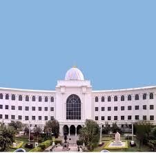

Salar Jung Museum
The Salar Jung Museum is an art museum located at Dar-ul-Shifa, on the southern bank of the Musi River in the city of Hyderabad, Telangana, India. It is one of the three National Museums of India.
Location: Dar-ul-Shifa, Hyderabad, Telangana, India
Ticket Price: INR 20 for Indian citizens, INR 500 for foreign tourists
Transportation: Accessible by road, well-connected by local buses and taxis.